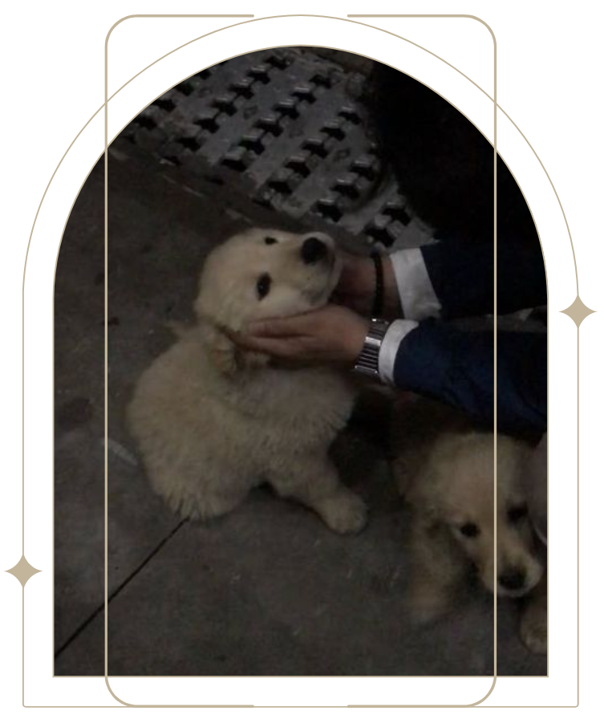
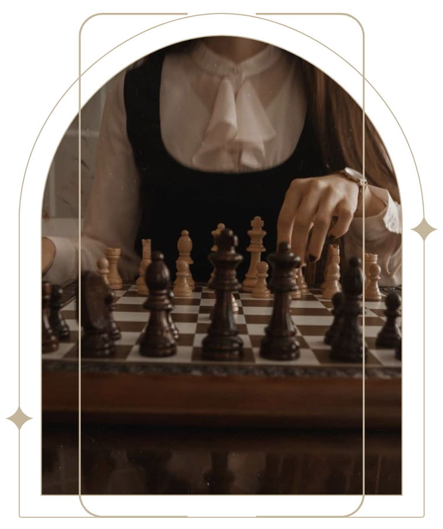
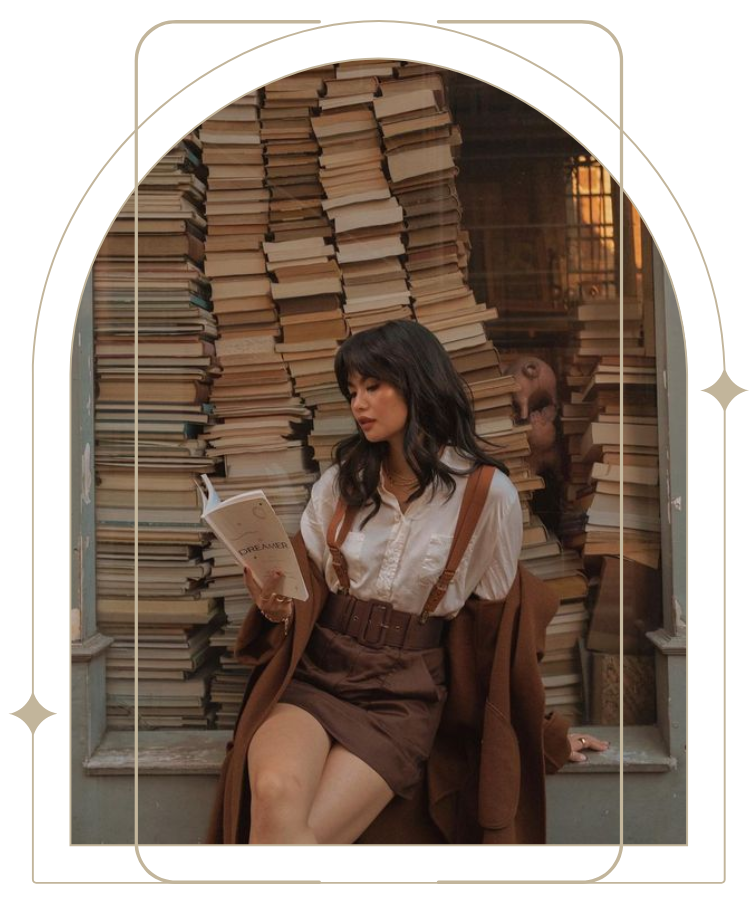
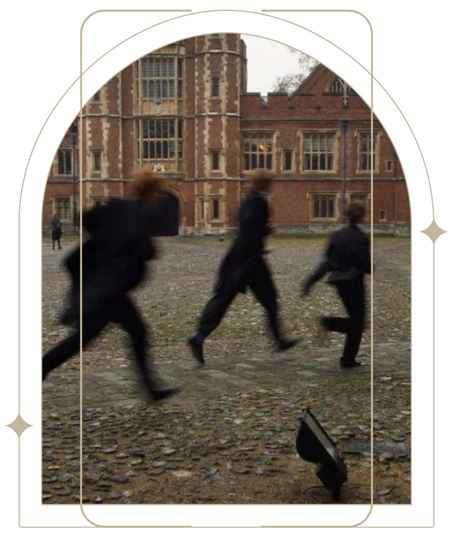
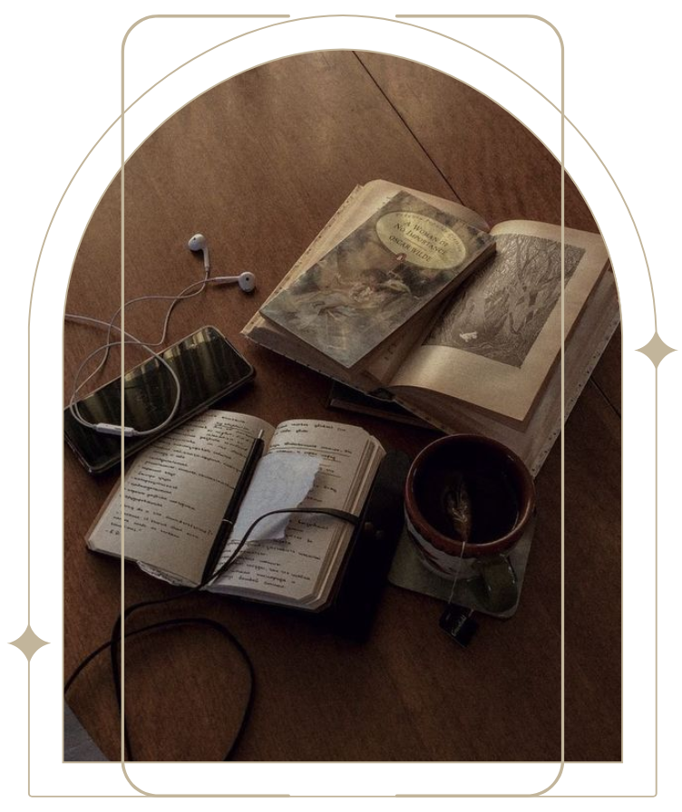
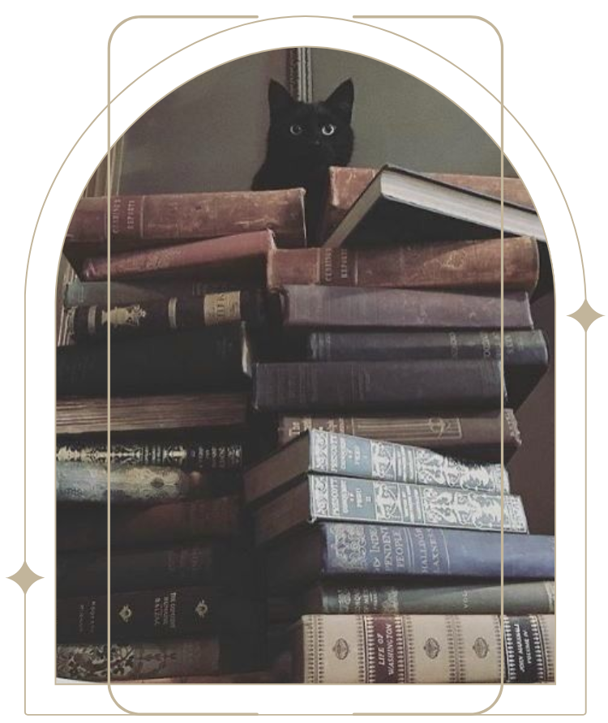

|  |
My name is Alex-Ann Burrell. I was born November 1st, 2003 in Kingston, Jamaica. I am currently
enrolled as a student of the University of Technology for a Bachelor of Science in Computing. I consider myself to be an
intelligent, observant, reliable, reserved yet sincere person to be around. One would be correct to
assume I am an overachiever and a bit of a perfectionist. I enjoy animals -especially puppies-, fashion, laughter, music and naps. I also enjoy spending time with my friends whether online or face to face and I do adore making them laugh. I have a very strong dislike for blantant disrespect, double standards, loud noises and smoking. In my free time, I can be found watching movies/TV shows, listening to music, decorating or playing games; whether online or otherwise. I am also partially good at playing chess. A motto I always remember to go by is "Never let success go to your head, never let failure get to your heart" said by Beyoncé. |
 |
|  |  |  |
|  | To my surprise, the Keirsey Temperament Sorter personality test was quite accurate. I have always prided myself on being a rational, problem solving individual. Although I’m not even-tempered in the slightest, I do yearn for achievement and seek knowledge when a new task is given to me. I would like to believe I have always been observant and analytical in most disagreements and discussions. I can be skeptical of certain people based on their ideals but I still aim to listen to others’ points and reach common ground as well as reevaluate my initial points once the validity of another’s has been proven. |  |